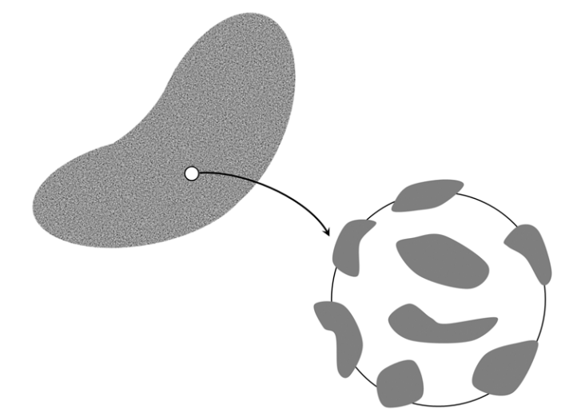
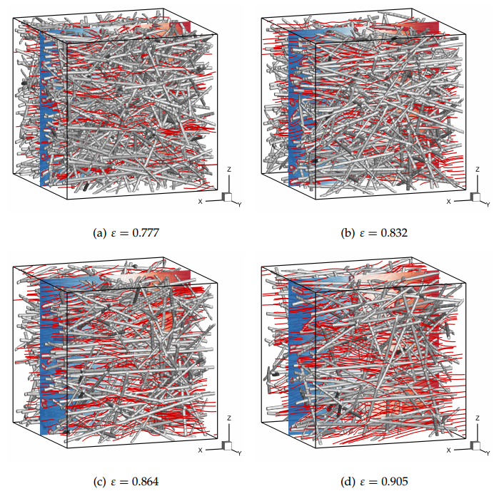

Lattice Boltzmann Method (LBM) - Flows in porous media  Pore-scale simulation of flud flows  Application of lattice Boltzmann method (Read more...) gas-liquid two-phase flows particulate flows flows in porous media